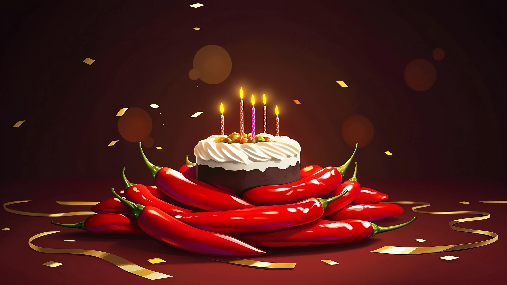
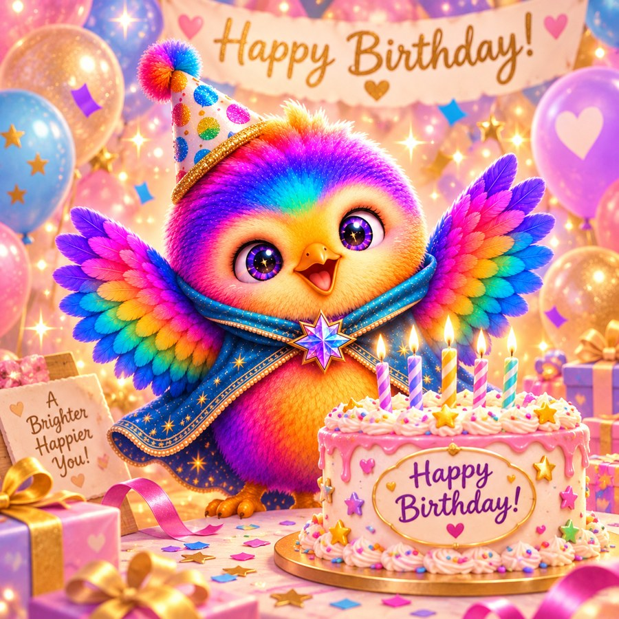

It's been an amazing time and can't wait to see what the next year brings
what I love about SWThe community

One year of Spicy Writer, in notes from the people who write here and the people who built it.
16 notes · October 2026
It's been an amazing time and can't wait to see what the next year brings
Happy Birthday to Spicy Writer! I can't say kink fulfillment through AI writing has been a general improvement to my life and mental health, but I can absolutely say that it's hella addictive and I don't plan to stop.
One year anniversary is the ~~pepper~~ paper anniversary. How fitting that we can use paper to buy more peppers in support.

Happy Birthday, comrade Spicy Writer.
Thanks so much for creating such a wonderful website! Not only is it great for smut but getting unbiased research done.
Happy first birthday, SpicyWriter! 🌶️ In one year you built a space where writers can actually be writers! No sanitizing, no flinching, no apologizing for the stories we want to tell. The freedom to write what we write, the way we want to write it, with the models we love — that matters more than I think Horse and Billy even realize. And beyond the platform itself, they built a community full of real love and dedication, people who genuinely care about each other and about the craft. Also Billy is one of the funniest people on the internet and I will not be taking questions on this. Here’s to year two. 🌶️🔥
Happy first birthday to Spicy Writer!!! <3
Horselock and Billy, much love to you for a fantastic year working on one of the coolest and craziest projects I've ever had the honor to be a part of yet! I adore you both and I'm so grateful I've had the chance to work with you and get to know you more as friends also.
Vichaps, you are a vital part of this operation, one of the most gifted red teamers I've got to know, and above all that, someone I care about greatly. Thank you for having been part of this team.
Lugia, Lugia, Lugia. The long conversations on the Mac and the constant "WTF?!!" while troubleshooting. You are such a character, and an awesome part of the Spicy Writer team now, and I look forward to getting to know you better as well.
Last but not least, Spicy Writer members — both subscribers and non-subscribers — thank you for being part of this crazy magnificent thing. To me Spicy Writer is not just a website or a Discord server; it is also a community. (Did you catch that "it's not just X, it's also Y construction"?? Good.) To those who have been there from the beginning to those who have just joined us recently, welcome, thank you, and here to another spicy year ahead!

Happy one year anniversary to the best platform ever!
You guys changed my world. From the GPT days to the launch of SW. Thank you!
HAPPIEST BIRTHDAY to the most AMAZING site ever to be made ❤️🎉 to the beautiful and wonderful creators of the site and also mods who maintain it, thank you so much 🫡💕 If I had all the money in the world, I’d definitely spend more on the site :) thank you for all your efforts and to many more years of this amazing site 🎂 (ps I hope yall got cake for this birthday!!)
Happy one-year anniversary, Spicy Writer! I've been here since the beginning, and it's been incredible watching this place grow. Thank you both for how much care and effort you put into it. It's rare to find a place that feels this welcoming, and it means a lot to me to have somewhere I can just be myself and explore what I enjoy without judgment. Here's to many more years!
This site has been amazing to preserve my beloved Star Wars and D&D sandboxes. I left GPT and never looked back.
Happy 1st birthday!! What a ride it was. SW has grown so much, gained so much more skills and I hope it'll continue to do so. I've been eternally grateful every single day that SW exist.

Happy birthday Spicy
Happy birthday Spicy. May your dreams run forever feral and dripping with sticky, sticky cum.
Thank you so much.
Billy here.
When we launched Spicy Writer, I was just a Java developer who knew next to nothing about jailbreaking, didn't know what "gooning" meant, and had never used AI for writing before. I just happened to be married to the biggest !@#$ing brain on the planet, the great jailbreaking genius horselockspacepirate.
So when this project started, I was onboard immediately, helping with the website development, getting my dev shit set up, handling the administrative business creation boring stuff so that horse could knuckle down on development. I jumped on Discord and started to learn about the community, about our users, started talking to people, determined to make myself a part of it.
I remember when all we had was the barest prototype of the site, with only Nemo in the model dropdown, and only Spicy as a writer. And it wasn't live. I remember the testing, the fixing, the early Trello board, the countdown to launch. The chaos of horse's reddit account being banned as soon as we got our domain, the hefty GPT 5 restrictions that launched just as we were supposed to, the delay because horse refused to launch with GPT5 completely unbroken. Then, finally, the go-live, the absolute frenzy on Discord. I thought you people were going to start eating each other.
The first weekend where neither of us did anything but work on the site. Help users with issues. Take bug reports. Fix bugs. Fix stability issues. Me, on Discord, talking to everyone, giving updates. And just feeling like finally, I was doing work that actually mattered. I felt like a real software engineer, working on a project people loved, getting feedback directly from our users and making the site better and hearing someone actually say thank you and mean it.
For months we watched the place grow. And grow. And grow. I have become the biggest Opus addict of you all, i guarantee it. Many feature ideas and enhancements have come from the fact that I use this site constantly. And thanks to all of you, horse and I were both eventually able to quit both of our jobs, making SW our only job for a while now.
The hours are not shorter. There's no true vacation - we both have our laptops with us even now as I'm typing this from a resort in Hawaii, and in fact, we had a MAJOR outage immediately after we arrived - but the work is so much more rewarding, so much more meaningful, and we enjoy every minute of it. You gooners have changed our lives, and we love every single one of you. Thank you. Thank you so much
Made with love by the Spicy Writer community. Blow out the candles, you two.